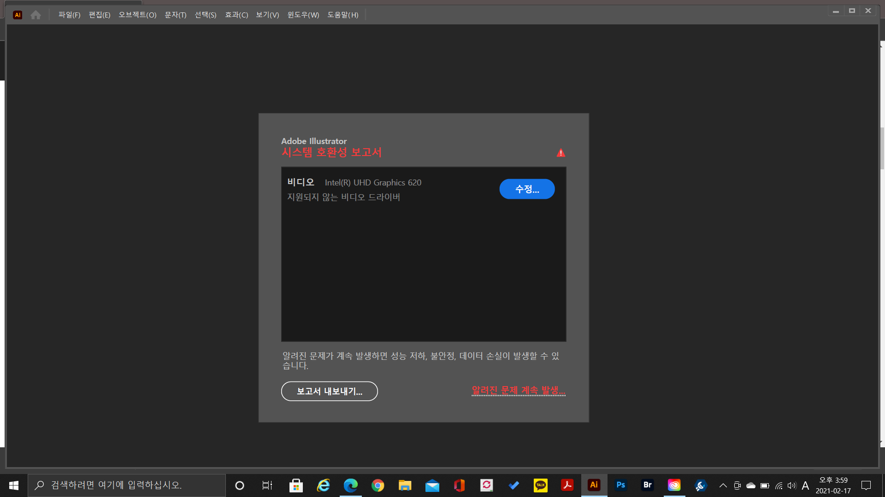

  <a href="http://tuntunbiz.com" target="_blank">에이치티엠엘이란 무엇인가??</a>
  hypertext<p> markup language is the standard markup language for
  <strong>creating <u>web</u> pages</strong> and web applications.</p>
  
  <h1>WC3</h1>
